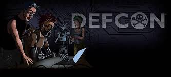

Eventos mas grandes de Ciberseguridad
Cinco días en los que se recomienda volver al papel y al lápiz: los hackers hacen de Las Vegas su campo de juego para demostrar habilidades durante Blackhat, la conferencia anual de ciberseguridad en la que todo vale. Un juego de buenos y malos en el que se recomienda apagar la conexión wifi del móvil, no encender el portátil e incluso no usar los cajeros próximos al encuentro. En varias ocasiones se han creado máquinas imitando uno real para copiar los números de tarjetas.

DEFCON es una de las convenciones de hackers más antiguas. Se lleva a cabo generalmente en la última semana del mes de julio o la primera semana de agosto en los Estados Unidos en la ciudad de Las Vegas.
| No. | DEFCON Y BLACK HAT | |
|---|---|---|
| Nombre | Fechas | |
| 1. | DEFCON | Agosto 8 |
| 2. | BLACK HAT | Agosto 3 - Agosto 8 |